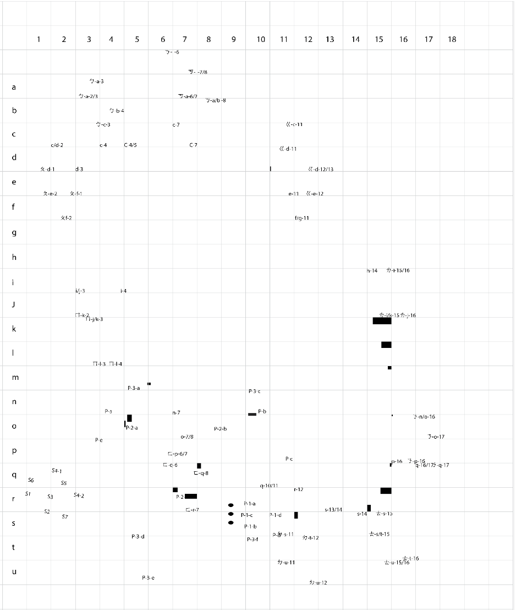
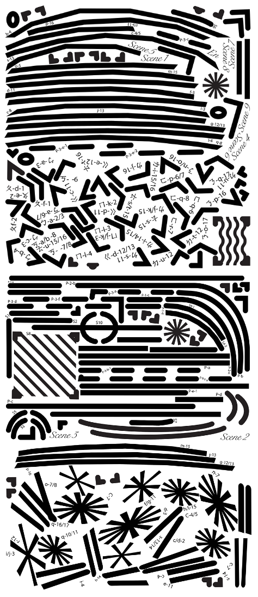
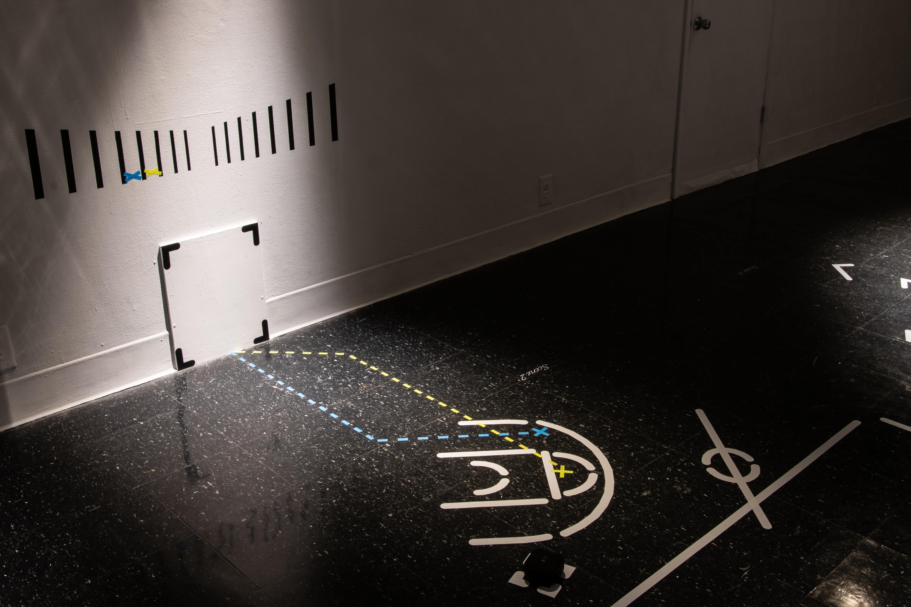
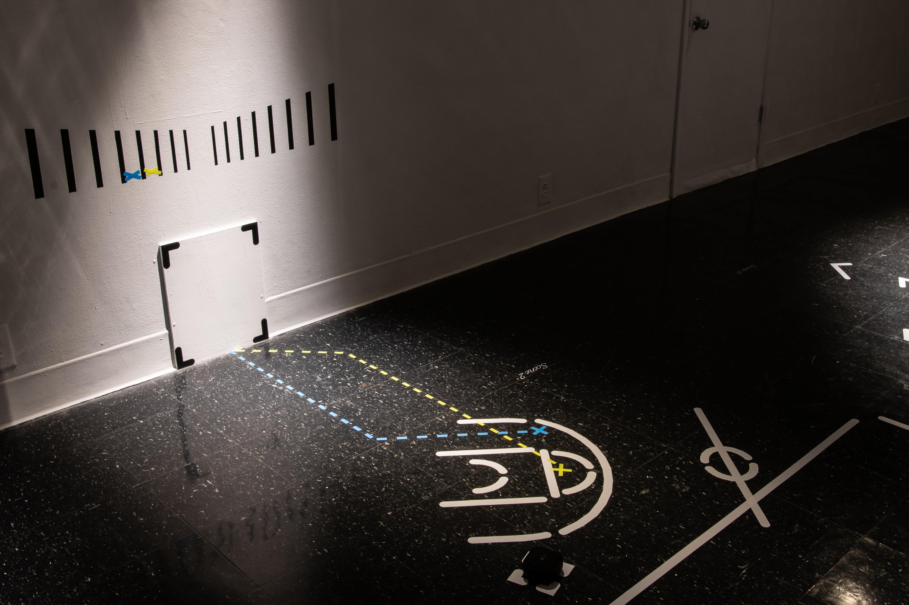
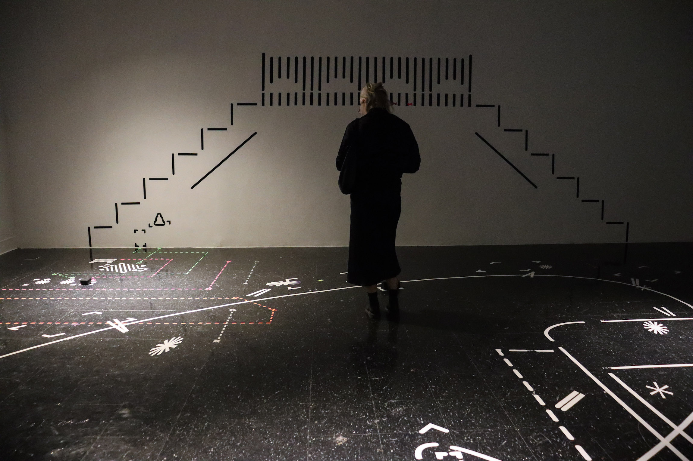
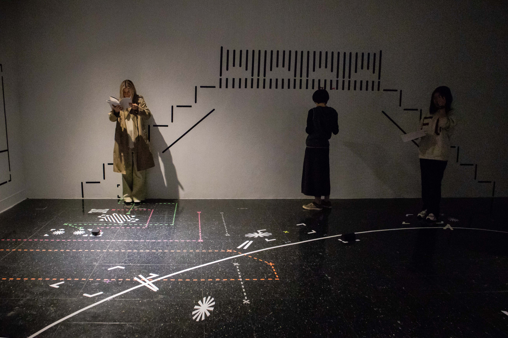
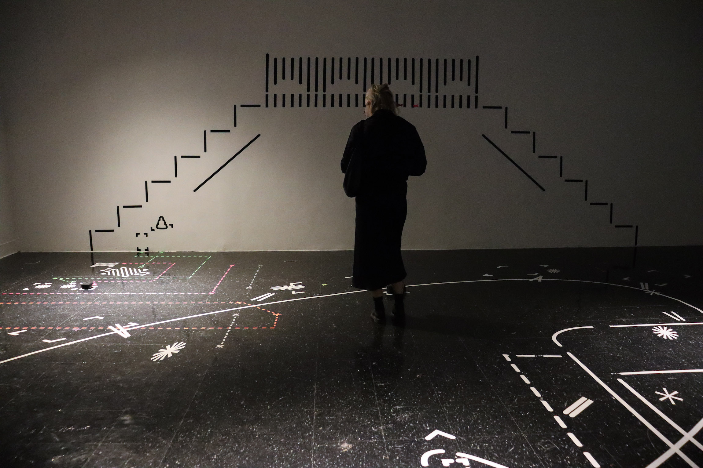
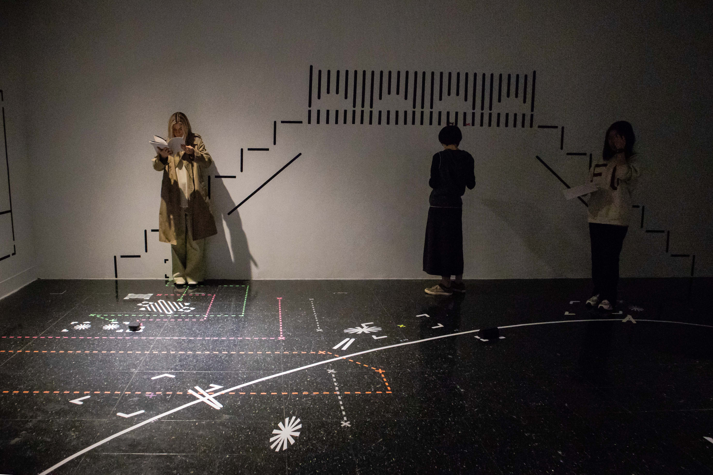

Phantom Scripting
Installation ,December 2022.
22'10” * 31'6" * 9'6", 6 Audio Tracks.
Phantom Scripting is an immersive environment and multitrack sound installation that explores the experience of understanding the unwritten rules within the new cultural system of migrants.
The gallery space is transformed into a complex theatre stage. The screenplay is based on five Taiwanese movies and dramas that examine local Taiwanese culture and the unspoken rules within the local society.
The artist challenges audiences by providing the script but not having the actors present on stage. This prompts the audience to piece together the system in the space and the relationship between the script and the stage. The same symbolic visual language is used in both the script and the space, with movement instructions provided for audiences to interact with the scenes. For instance, theatrical stage marks on the gallery floor indicate where an actor on the stage would be positioned and their movement through space. The same marking system is adapted to the script placed beside the text dialogue. The actor then becomes an invisible phantom, relying on viewers in the gallery to maintain their imaginary existence.
This experience of understanding a system in the space overlaps with the social experience of exploring a new cultural system as a migrant. The design and installation process also reproduces this social experience of exploring a new system.
The also artist uses the tile on the floor as a grid to transfer the visuals from the screen to the space by deconstructing and reconstructing the design.
The design and installation process is also reproducing this social experience of exploring a new system.
The artist used the tile on the floor as a grid to transfer the visual from the screen to the space by deconstructing/reconstructing the design.

The graphic was deconstructed based on the grid system in the space to fit into a small size medium of the vinyl printer.



 



 


